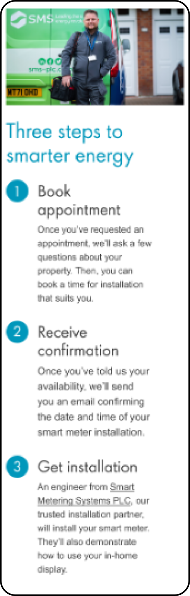

Smart Meters

Built on: Figma
The project.
Within this project I looked at redesigning the UI and UX of the page which promoted and educated customers surrounding smart meters.
I was openly communicating with stakeholders to manage expectations throughout the entirety of the project. I also worked side-by-side developers and the brand team to combine our skill-sets and provide the best solution. Balancing business and customer needs to provide an excellent user experience while still prioritising the business’ needs of annual smart meter installation targets.
Problem Areas
Accessibility standards
This page makes it very difficult for users to access key information to do with smart meters, providing 4 videos with said key information in them. While also copying written information, the page doesn’t use the digital real estate to it’s full potential and showing information the customers actually care about.
Static content
One problem area is that, no matter where the user is within the process of getting a smart meter installed, on the current implementation the content presented on the smart meter page is the same.
Why would a user with a smart meter want to know why to install a smart meter? This page losses value and could be tailoring relevant information for the user, wherever they are within their journey of installing a smart meter.
Large amounts of information to do with
smart meters
There is so much to learn about smart meters and can be overwhelming for people interested, and especially off-putting for those not interested but needing to install one due to government mandates.
Competitor Analysis
1. Pros, Cons & Neutral
I took direct competitors in the energy sector and looked at how they presented information to do with Smart meters. From here I deduced lists for each competitor, including; pros, neutral features and cons.
2. The market as a whole
From there, I looked at Strengths and Weaknesses in the market as a whole.
3. Opportunities
Then, I decided ideas to magpie and adapt, and ideas to fill the gaps within the market.
Strengths
- Pages often have good CTA placement and copy
- Pages often informative and useful
- They effectively communicate a smart meters value
- Considerations for different types of customers
- "Path to Zero" strong selling point
- Octopus - upfront on savings amount "~£100" and installation fees (no one else does this)
Magpie opportunities
- Upfront on amount saved
- Strong CTA placement and copy
- Mention of Net-Zero
- Considerations for different types of customers
- Strong communication of smart meters value
Weaknesses
- Pages are often very long
- Pages have an excessive use of imagery
- Many pages contain videos - restricts access to information
- FAQs are often very far down the page
- Some pages lack to mention the monetary savings of smart meters
- Presentation/format of information can get repetitive
- Some pages are not aligned within a users natural scanning of the page
Market gaps to fill
- A concise page with only the information that is needed
- Potentially splitting the information into two pages/tabs
- Don't display videos, if needed present them with a "video summary" dropdown
- An easier way to access the FAQs
- Communicate stronger they save money
- Find a way to present information outside traditional formats
- Correct formatting/alignment on a page
- Alignment of content
Forums & Articles
Furthering my research I wanted to learn how a
customer feels about smart meters.
1. Reddit, Mums-net & more
Here I looked at the publics opinions of smart meters, why they were hesitant to install one, why they liked having one or issue while owning one.
2. News articles
News articles can be very influential on public opinion. So I looked at how public news articles were talking about smart meters and listing overall pros and cons from each article.
3. Opportunities
Then, I pooled these concerns and positives surrounding smart meters into a list of potential pieces of information to include into the new smart meter page.
I noticed themes with peoples’ concerns and grouped them:
- Issues surrounding information
- Issues surrounding payment
- Smart meters not working
- Consumers not understanding the value
- Consumers not trusting companies
There were also some positive themes I noticed:
- Automatic meter readings
- Potential money saved
Reviewing the current page
Strengths
- Good placement of CTAs.
- Initial benefits short and sweet - easy to scan.
- The videos were valuable, if watched.
Weaknesses
- Videos made valuable information inaccessible.
- Written benefits didn’t fully communicate their value
- Company metrics may give off the wrong motivations behind pushing installations.
- ‘Our installation promise’ reads as T&Cs for a customer, and provides too much cognitive load.
- UI of the page felt dated and had formatting problems. Issues with the copy being too wordy
Problem area: Static content
Users are presented with the same information once they had their smart meter installed. This isn’t a pleasant user experience, feeling as though your needs are no longer met.
A user without a smart meter
A user with a smart meter
Design iterations
Iteration 1: Tabs
Within the first iteration I wanted to create an experience where the user could easily access all information to do with smart meters, without scrolling hoping they’ll find what they need.
A large issue within the competitive analysis was that smart meter pages were incredibly long, to allow users to still have access to all this valuable information, without giving them too much to search through - I took the approach of using tabs to group information.
Iteration 2: User States
The next idea was to have the single URL be responsive to the step in the installation process the user was in.
Working with the development team, here are the user states we could determine:
- Logged out
- Customer does not have a smart meter
- Customer has booked and is waiting for an installation
- Customer has a smart meter
- Customer has registered and is waiting to hear if their property is eligible
- Customer has registered and their property was not eligible
Here are some considerations I made for user states:
Customer without a smart meter
- Make the page easily scannable.
- Include information to reduce customers anxiety
- Work with the brand team to angle the tone as to not come across as ‘upselling’.
Customer with a smart meter
- Rather than showing a customer why to get a smart meter, I wanted to give information on what to do with one, now it’s installed. Providing a more supportive approach.
- Something which was important here was changing the header images and UI above the fold, so in different states users could quickly understand they were getting shown new information.
Customer waiting for a smart meter
installation
- Appointment booking and waiting around can provide an area of anxiety for the customer. So I wanted to provide as much information as I could to ease their mind.
- While in the meantime providing information to help them get the best use out of their smart meter once it arrives.
Further refinements: the installation process
I wanted to make the installation process easy to understand with 3-4 simple steps to getting a smart meter installed.
Round 1: Simple, but not mobile responsive and little room for information.
Round 2: Slightly more complex, but responsive and more room for information
Desktop
Mobile
Round 3: Sometimes simple is better! Responsive and room for lots of information.
Desktop
Mobile
Iteration 3: Refining the designs
Myself, the UX team, developers and product owners had all agreed on this solution of user states - Once I had received all the copy and gotten approvals from legal, PR and brand team, the final step was to refine the UI
Leading us to our final designs.
The final designs
User without a smart meter

User waiting for an installation
User with a smart meter
Considerations
User without a smart meter
I wanted to make this page simple and easy to scan and tailored content towards customers who wanted to know how a smart meter helps them.
With 3 simple steps to help the customer understand that installing a smart meter is easy.
Re-iterating the CTA with a brief overview of how a smart meter helps, incase a user quickly scrolled through - they’d still get relevant information
FAQs answering some questions / anxiety from my research.
User waiting for an installation
I wanted to give users everything they needed to prepare for their appointment.
Also, changing the FAQs so they were relevant to the user at this point in their journey.
User with a smart meter
I wanted to give users useful information on how they can get the most out of their smart meter.
Again, changing the FAQs so they were relevant to the user at this point in their journey.
Niche user states
User with an ineligible property
In the rare case when a user has an ineligible property, we provide some copy surrounding why this may be the case.
In the current designs there is no feedback for the user on why this may be the case.
The CTA is here so users have the option to re-register if they think something is wrong.
User waiting to hear if they are eligible
In some cases, a user will have to wait to hear from us regarding the eligibility of their property.
Here we just provided some copy to give users a clearer picture of what’s happening.
Takeaways
What I learned
- How to effectively communicate with stakeholders and manage expectations.
-
The importance of agile ceremonies and how to work within
them as a UX
Designer. - How to work with a brand team.
-
To stop worrying about ‘the perfect solution’ and push for
incremental changes to
better measure and adapt the solution.
What I’d do differently
-
Conduct user interviews, to get more insight into how people
feel about smart
meters.